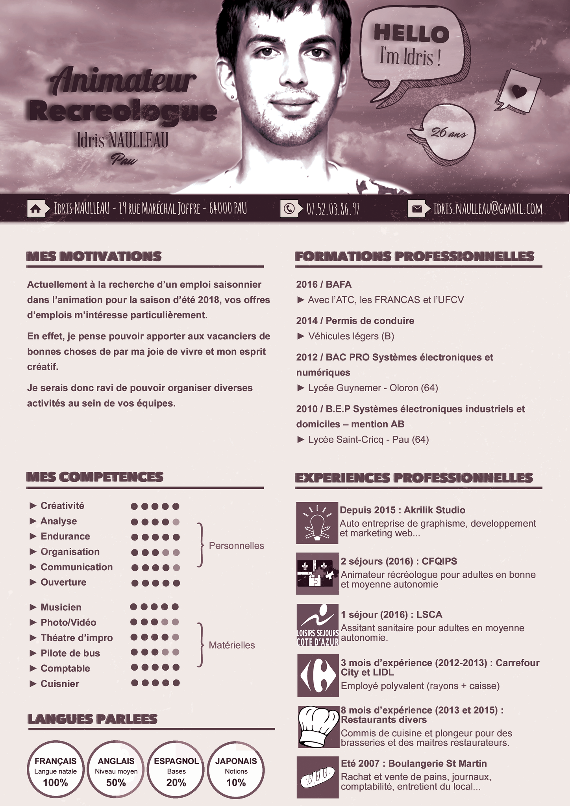
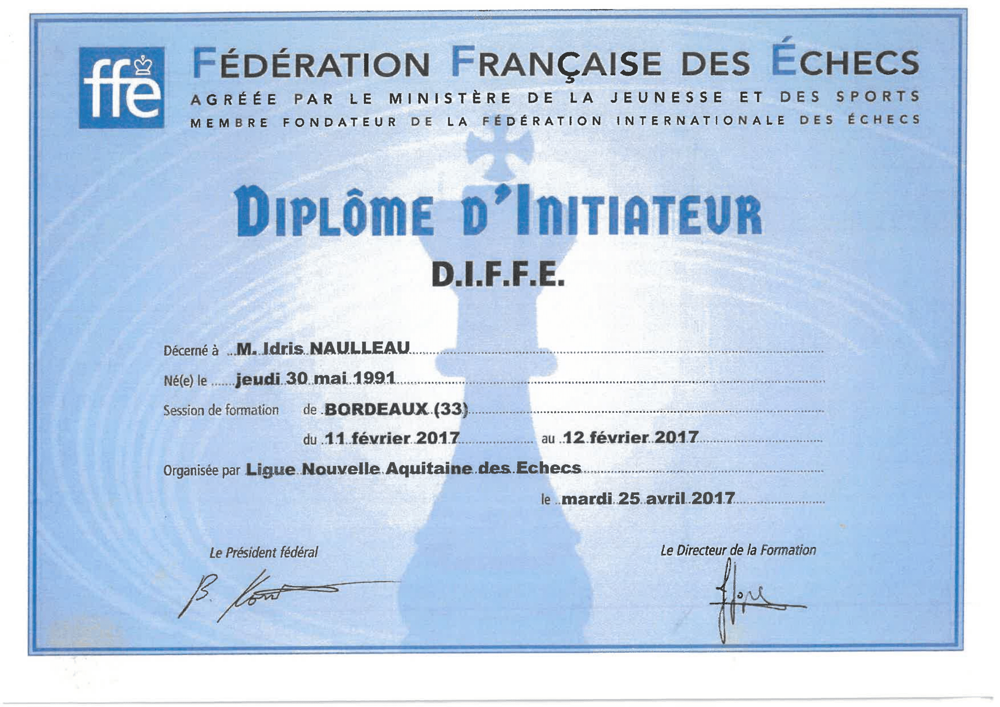
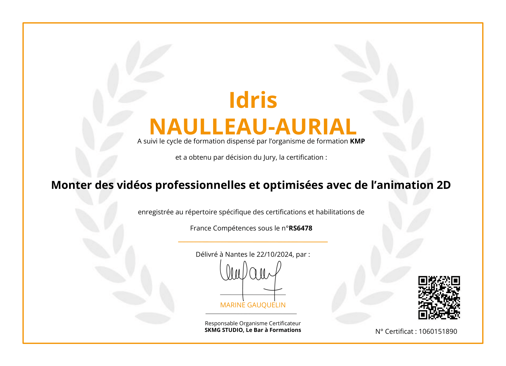

Profil
Parcours
Mes études initiales m’ont appris un réflexe que je garde encore aujourd’hui : comprendre le "pourquoi" avant de foncer sur le "comment".
J’ai commencé par l’électronique avec un BEP et un BAC PRO Systèmes électroniques industriels et domestiques. C’est là que j’ai appris la rigueur, le diagnostic et l’approche systémique.
Voulant me tourner vers la programmation, j’ai ensuite intégré un BTS SIO. Malgré de bons résultats, l’accès à l’option développement m’a été refusé à cause d’une courte absence.
J’ai décidé de ne pas perdre deux ans dans une filière qui n’était pas mon choix. J’ai quitté le BTS pour apprendre par moi-même et entrer directement sur le marché du travail.
De cette période, je garde une grande rigueur méthodique, un pragmatisme dans la prise de décision et une forte capacité d'autonomie et d'adaptation sur le terrain.
Après le BTS, il fallait subvenir à mes besoins. Faute d'opportunités en informatique dans ma petite ville, j'ai pris des emplois alimentaires, notamment en restauration.
En parallèle, je me formais en autodidacte au développement front-end. En 2015, j'ai cliqué mon activité freelance à plein temps sur la côte, à Lacanau Océan. Je réalisais de petits sites vitrines, du dépannage hardware et de la formation informatique.
L'été, je complétais cette activité en étant responsable de séjours adaptés pour personnes en situation de handicap (organisation, gestion d'équipe et prise de décision).

De retour dans le Béarn, j'ai approfondi mes compétences en UI/UX Design pour compléter mon profil.
Pour gagner en stabilité, j'ai ensuite pris un CDI de réceptionniste de nuit en hôtellerie pendant 5 ans. C’est cette stabilité qui m’a permis d’enclencher un Projet de Transition Professionnelle (PTP), pour me recentrer définitivement vers les métiers de la Data.
J’ai commencé à côtoyer l’informatique à l’époque de Windows 98. En 6e, une initiation au HTML m'a fait réaliser avec fascination qu'avec quelques lignes, je pouvais créer réellement quelque chose. J'ai par la suite rejoint le club informatique du collège pour construire des robots.
Avec le temps, j’ai compris ce qui m'attirait le plus : transformer une idée en solution. L'informatique n'est pas une fin en soi, c’est un outil pour rendre une situation plus claire, plus fiable ou plus simple à utiliser.
Dès que je veux prototyper, automatiser, améliorer ou structurer, je reviens naturellement vers le code.
J’ai choisi de viser le métier de Data Engineer car il correspond parfaitement à ma façon de travailler : penser en systèmes, fiabiliser et automatiser. C'est le métier qui permet de faire circuler la donnée proprement et de construire des bases solides.
Ce rôle étant souvent accessible à niveau Master (Bac+5) avec de forts débouchés sur le marché de la Data, j'ai construit ma trajectoire en deux étapes pour pallier le manque d'équivalent Bac+3 requis au départ :
- Étape 1 : Data Analyst via une formation à la Wild Code School pour consolider les fondamentaux (SQL, métriques, restitution).
- Étape 2 : Data Engineer en contrat de professionnalisation (3 semaines en entreprise / 1 semaine en école) sur 18 mois, pour industrialiser ces bases.
Projets & avenir
Dans mon contrat pro Data Engineer, je cherche à progresser tout en produisant du résultat concret. Je cherche un cadre pour apprendre et m'améliorer en continu.
Concrètement, j'attends :
- Un environnement sain : communication respectueuse et ouverte, feedbacks constructifs, entraide.
- Des missions variées pour éviter la monotonie.
- Un vrai accompagnement : mentorat, revues de code et points d'étape réguliers.
- La possibilité de proposer des idées pour participer à l'amélioration des process.
J’ai une tendance naturelle à imaginer des idées et à vouloir les concrétiser. Ce qui m'attire dans la création de projets, c'est la possibilité de transformer une idée en quelque chose d'utile et de la confronter au réel.
C'est aussi ce qui m'oblige à sortir de ma bulle technique pour comprendre le besoin de l'utilisateur final, les choix de design, ou même des notions de base de marketing.
J'ai déjà connu le freelance par le passé, avec ses hauts et ses bas. Aujourd'hui, mon choix d'un contrat pro est là pour me construire une trajectoire solide de manière sereine, tout en gardant mes projets personnels en parallèle.
Ma vision à long terme s'articule autour de la liberté géographique. J'ai un fort besoin de mobilité et j'apprécie l'indépendance pragmatique. Je privilégie donc les organisations réfléchies avec du télétravail complet sur le long terme.
Mon moteur, c’est la croissance : Je construis, je lance, puis je passe la main pour que le projet vive sans moi. La simple maintenance, ce n’est pas pour moi : j’ai besoin du prochain défi pour avancer.
Je peux tout à fait m'inscrire dans un CDI durablement, si le management est moderne, plutôt horizontal, et qu'il récompense l'impact réel concrétisé plutôt que la politique d'entreprise.
Mon cap reste donc le même : construire utile, avec une logique de scaling, grandir en compétence, et apporter des résultats tangibles dans un cadre de confiance.
Passions
Je me suis mis aux échecs sur le tard. J'ai joué en club amateur puis en division régionale, ce qui m'a conduit à passer mon diplôme d'initiateur (D.I.F.F.E.).

Jouer ou animer régulièrement cette pratique m'apprend à garder la tête froide, à me focaliser et à prendre des décisions de façon méthodique sous tension.
Le sport fait partie intégrante de mon équilibre, c'est ce qui m'a véritablement inculqué la discipline et la régularité.
J'ai pratiqué la natation en compétition très tôt et ce jusqu'à mes 19 ans (Niveau N3 : ~1:18 au 100m Brasse, ~58s au 100m Libre), suivi par des années régulières de pratique en sports de combats divers (Boxe, Kick-boxing, MMA).
Aujourd'hui, je pratique principalement l'escalade (niveau bloc 5C). Comme dans tout ce que j'entreprends, j'y cherche une progression constante et méthodique.
Mon regard sur la création de vidéos a démarré très tôt par des affinités dans les domaines du théâtre, puis par une véritable expérimentation au sein d'une association audiovisuelle.
Après avoir lancé une chaîne YouTube autour de l'informatique qui a plutôt bien marché, je l'ai supprimée pour préférer accompagner divers créateurs confirmés et des communautés depuis les coulisses.
Cela m'a évidemment poussé à intégrer réellement les mécaniques d'attention et la façon de structurer un format compréhensible. Aujourd'hui, je valide réellement ces acquis techniques accumulés grâce un Diplôme de Monteur Professionnel.

Dans l'animation de communautés géantes, j'ai notamment plongé dans la gamification pure en gérant des milliers de joueurs sur un ARG (Alternate Reality Game) via l'un des plus gros serveurs Discord français.
Voulant automatiser certains process complexes, je me suis pris de fascination pour le développement ludique et pour toutes les mécaniques liées au jeu vidéo. J'ai par ce biais validé très concrètement une formation professionnelle de Game Designer, consolidant des bases indispensables en développement UX/Conception.

Je mène aujourd'hui silencieusement deux développements de projets sur cette discipline transversale mêlant Art/Logique : un ARG narratif sur Discord formé en équipe, et un jeu vidéo narratif indépendant ambitieux nécessitant une levée de fonds.
Multi-instrumentiste (guitare, piano, percussions, basse), j'ai beaucoup joué en groupe ou en formation (scène Rock, Metal, jammings occidentaux/traditions d'autres pays) ce qui m'a appris à m'adapter et à écouter continuellement les autres instruments.
Désormais plus isolé dans les répétitions, je développe tout cet axe artistique via de l'improvisation au profit de machines appelées "Loopers" (appareils pour enchaîner les boucles instrumentales empilées l'une après l'autre en direct). Je monte alors une piste solo rédigeant entièrement ma construction percussive, harmonique, etc.
Ce portfolio est entièrement sonorisé : Si tu clique sur le bouton ci-dessous tu pourras y accéder. J'y fais toute la production, composition et interprétation des instruments sauf cas contraire quand c'est indiqué.